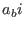
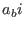

Next: Generate a two-equation model Up: Module turbulence: its all Previous: Initialise the turbulence module Contents
INTERFACE:
subroutine init_scnd(scnd_coeff)DESCRIPTION:
This subroutine computes the  's defined in (61) and
the 's defined in (65) from the model parameters
of the pressure redistribution models (53) and (59).
Parameter sets from different authors are converted to the GOTM
notation according to the relations discussed in section 4.5.
's defined in (61) and
the 's defined in (65) from the model parameters
of the pressure redistribution models (53) and (59).
Parameter sets from different authors are converted to the GOTM
notation according to the relations discussed in section 4.5.
USES:
IMPLICIT NONEINPUT PARAMETERS:
integer, intent(in) :: scnd_coeffDEFINED PARAMETERS:
REALTYPE, parameter :: cc1GL78 = 3.6000 REALTYPE, parameter :: cc2GL78 = 0.8000 REALTYPE, parameter :: cc3GL78 = 1.2000 REALTYPE, parameter :: cc4GL78 = 1.2000 REALTYPE, parameter :: cc5GL78 = 0.0000 REALTYPE, parameter :: cc6GL78 = 0.5000 REALTYPE, parameter :: ct1GL78 = 3.0000 REALTYPE, parameter :: ct2GL78 = 0.3333 REALTYPE, parameter :: ct3GL78 = 0.3333 REALTYPE, parameter :: ct4GL78 = 0.0000 REALTYPE, parameter :: ct5GL78 = 0.3333 REALTYPE, parameter :: cttGL78 = 0.8000 REALTYPE, parameter :: cc1MY82 = 6.0000 REALTYPE, parameter :: cc2MY82 = 0.3200 REALTYPE, parameter :: cc3MY82 = 0.0000 REALTYPE, parameter :: cc4MY82 = 0.0000 REALTYPE, parameter :: cc5MY82 = 0.0000 REALTYPE, parameter :: cc6MY82 = 0.0000 REALTYPE, parameter :: ct1MY82 = 3.7280 REALTYPE, parameter :: ct2MY82 = 0.0000 REALTYPE, parameter :: ct3MY82 = 0.0000 REALTYPE, parameter :: ct4MY82 = 0.0000 REALTYPE, parameter :: ct5MY82 = 0.0000 REALTYPE, parameter :: cttMY82 = 0.6102 REALTYPE, parameter :: cc1KC94 = 6.0000 REALTYPE, parameter :: cc2KC94 = 0.3200 REALTYPE, parameter :: cc3KC94 = 0.0000 REALTYPE, parameter :: cc4KC94 = 0.0000 REALTYPE, parameter :: cc5KC94 = 0.0000 REALTYPE, parameter :: cc6KC94 = 0.0000 REALTYPE, parameter :: ct1KC94 = 3.7280 REALTYPE, parameter :: ct2KC94 = 0.7000 REALTYPE, parameter :: ct3KC94 = 0.7000 REALTYPE, parameter :: ct4KC94 = 0.0000 REALTYPE, parameter :: ct5KC94 = 0.2000 REALTYPE, parameter :: cttKC94 = 0.6102 REALTYPE, parameter :: cc1LDOR96 = 3.0000 REALTYPE, parameter :: cc2LDOR96 = 0.8000 REALTYPE, parameter :: cc3LDOR96 = 2.0000 REALTYPE, parameter :: cc4LDOR96 = 1.1180 REALTYPE, parameter :: cc5LDOR96 = 0.0000 REALTYPE, parameter :: cc6LDOR96 = 0.5000 REALTYPE, parameter :: ct1LDOR96 = 3.0000 REALTYPE, parameter :: ct2LDOR96 = 0.3333 REALTYPE, parameter :: ct3LDOR96 = 0.3333 REALTYPE, parameter :: ct4LDOR96 = 0.0000 REALTYPE, parameter :: ct5LDOR96 = 0.3333 REALTYPE, parameter :: cttLDOR96 = 0.8000 REALTYPE, parameter :: cc1CHCD01A = 5.0000 REALTYPE, parameter :: cc2CHCD01A = 0.8000 REALTYPE, parameter :: cc3CHCD01A = 1.9680 REALTYPE, parameter :: cc4CHCD01A = 1.1360 REALTYPE, parameter :: cc5CHCD01A = 0.0000 REALTYPE, parameter :: cc6CHCD01A = 0.4000 REALTYPE, parameter :: ct1CHCD01A = 5.9500 REALTYPE, parameter :: ct2CHCD01A = 0.6000 REALTYPE, parameter :: ct3CHCD01A = 1.0000 REALTYPE, parameter :: ct4CHCD01A = 0.0000 REALTYPE, parameter :: ct5CHCD01A = 0.3333 REALTYPE, parameter :: cttCHCD01A = 0.7200 REALTYPE, parameter :: cc1CHCD01B = 5.0000 REALTYPE, parameter :: cc2CHCD01B = 0.6983 REALTYPE, parameter :: cc3CHCD01B = 1.9664 REALTYPE, parameter :: cc4CHCD01B = 1.0940 REALTYPE, parameter :: cc5CHCD01B = 0.0000 REALTYPE, parameter :: cc6CHCD01B = 0.4950 REALTYPE, parameter :: ct1CHCD01B = 5.6000 REALTYPE, parameter :: ct2CHCD01B = 0.6000 REALTYPE, parameter :: ct3CHCD01B = 1.0000 REALTYPE, parameter :: ct4CHCD01B = 0.0000 REALTYPE, parameter :: ct5CHCD01B = 0.3333 REALTYPE, parameter :: cttCHCD01B = 0.4770 REALTYPE, parameter :: cc1CCH02 = 5.0000 REALTYPE, parameter :: cc2CCH02 = 0.7983 REALTYPE, parameter :: cc3CCH02 = 1.9680 REALTYPE, parameter :: cc4CCH02 = 1.1360 REALTYPE, parameter :: cc5CCH02 = 0.0000 REALTYPE, parameter :: cc6CCH02 = 0.5000 REALTYPE, parameter :: ct1CCH02 = 5.5200 REALTYPE, parameter :: ct2CCH02 = 0.2134 REALTYPE, parameter :: ct3CCH02 = 0.3570 REALTYPE, parameter :: ct4CCH02 = 0.0000 REALTYPE, parameter :: ct5CCH02 = 0.3333 REALTYPE, parameter :: cttCCH02 = 0.8200 integer, parameter :: LIST = 0 integer, parameter :: GL78 = 1 integer, parameter :: MY82 = 2 integer, parameter :: KC94 = 3 integer, parameter :: LDOR96 = 4 integer, parameter :: CHCD01A = 5 integer, parameter :: CHCD01B = 6 integer, parameter :: CCH02 = 7REVISION HISTORY:
Original author(s): Lars Umlauf